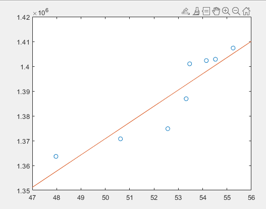
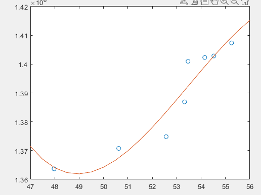
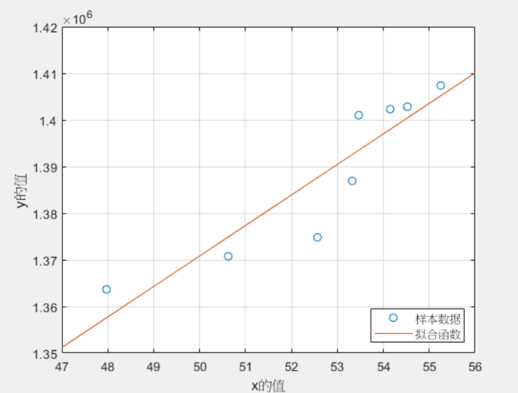
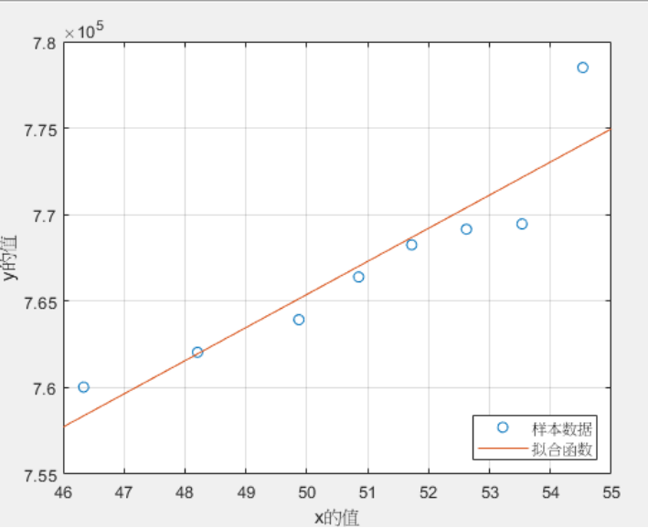
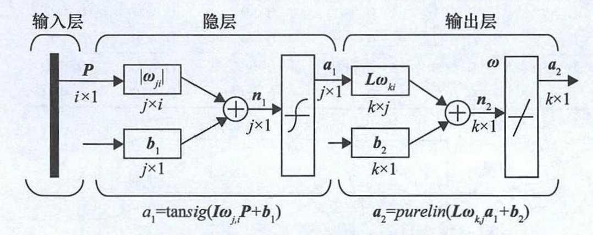
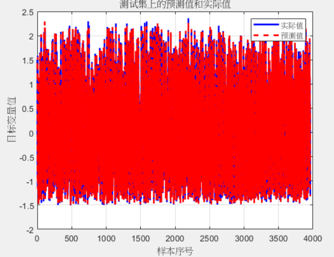
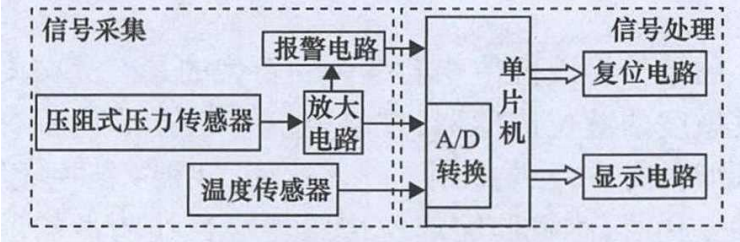

实验室实习结题报告
Internship Final Proposal
| 学号 Student ID | 522031910386 |
| 姓名 Name | 李俊彦 |
| 导师 Supervisor(s) | 姜萍萍 |
| 课题题目 Thesis title | 压力传感器性能智能补偿算法研究 |
| 院系 School | 智能感知工程 |
| 实习日期 Date | 6.24-8.21 |
摘要
半导体压力传感器在工业自动化、航空航天、汽车电子、医疗设备等领域有着广泛应用。随着应用领域不断拓展，对传感器的精度、稳定性和适应性也提出了更高要求。半导体压力传感器性能受多种因素制约，如温度漂移、非线性效应、老化效应、电磁干扰等，这些因素影响了传感器的精度和长期稳定性。 本项目拟开展传感器性能智能补偿方法研究。通过全面的性能测试实验，系统评估传感器非线性误差、零点漂移、灵敏度漂移等特性。在此基础上，研究传感器温度补偿算法、非线性校正算法、零点漂移跟踪算法等，在理论上提高传感器在复杂环境下的测量精度和稳定性。该方法是在全温区样本采集的数据基础上选取部分离散点数据,采用数据分析中的多项式拟合、最小二乘法曲面拟合原理对压阻式压力传感器进行数字补偿。通过对传感器进行实验标定和误差分析同时,该方法校准参数少,计算量相对较小,对于硬件要求较低,达到在性能和成本之间的良好平衡,是一种实用性较强的在线补偿方法,具有较强的工程应用价值。
关键词: 半导体压力传感器;温度补偿;多项式拟合
ABSTRACT
Semiconductor pressure sensors have extensive applications in industrial automation, aerospace, automotive electronics, medical devices, and other fields. As the application areas continue to expand, higher demands are being placed on the precision, stability, and adaptability of these sensors. The performance of semiconductor pressure sensors is constrained by various factors, such as temperature drift, nonlinear effects, aging effects, and electromagnetic interference, all of which affect the sensor's accuracy and long-term stability.
This project aims to research intelligent compensation methods for sensor performance. Through comprehensive performance testing experiments, the project will systematically evaluate the characteristics of sensor temperature drift, nonlinear errors, zero drift, sensitivity drift, and more. Based on these evaluations, the project will study sensor temperature compensation algorithms, nonlinear correction algorithms, zero drift tracking algorithms, and others, aiming to theoretically improve the measurement accuracy and stability of sensors in complex environments.
The research skills involved in the internship will include literature research and review, usage of sensor performance testing equipment, analysis and processing of test data, and research on compensation algorithms. The specific research steps include: current status research and review, sensor performance testing, data analysis and compensation algorithm research, algorithm implementation, and validation.
Key words:Semiconductor Pressure Sensor;Temperature Compensation;Polyfit
一、课题研究背景
目前常用的温度补偿方法分为硬件补偿和数字补偿两种，运用硬件补偿对测量电路进行优化，补偿能力有限，单一的硬件补偿无法满足实际工程应用的要求。数字补偿包括基于人工智能方法和基于数值分析方法两类，前者对系统硬件要求较高，后者最常见的是最小二乘拟合补偿方法与神经网络训练方法。
1研究意义和国内外工作进展
压力传感器是自动化控制系统、工业设备及医疗仪器中不可或缺的测量元件。随着现代工业对自动化、智能化的需求日益增长，压力传感器的应用范围不断扩大，涉及液压、气动、环境监测等多个领域。因此，提高压力传感器的性能和可靠性直接关系到整个系统的效率和安全性。然而，由于环境因素、温度变化及传感器的制造工艺等问题，压力传感器的输出信号常常存在测量误差，影响到数据的准确性及系统的控制效果。因此，研究压力传感器的性能测试及补偿算法具有重要的理论和实际意义。
在国内外，压力传感器的研究早在上世纪就已经开始，经过多年的发展，相关技术取得了显著进展。国外诸如美国、德国和日本等发达国家在压力传感器的开发上占据了领先地位。一些重点研究方向包括新材料的应用、微机电系统（MEMS）技术的推广以及智能化算法的应用等。例如，德国的某研究机构开发了基于MEMS技术的压力传感器，其灵敏度和稳定性在极端环境条件下均表现出优越的性能。此外，美国一些科研团队在传感器数据处理和补偿算法方面进行了深入研究，提出了多种算法模型，能够有效减小实时监测中的误差。在国内，随着经济的快速发展，压力传感器市场需求逐渐上升，相关研究也逐步兴起。许多高校和研究机构开始关注压力传感器的性能提升与补偿方法。在这方面，华南理工大学和陕西科技大学等机构开展了大量研究，涉及智能补偿算法和自适应控制技术等。通过搜索文献，使用软件方法对数据进行分析处理，用于温度补偿算法常见有以下四种：
（1）多项式拟合：它使用多项式函数来表示一组数据，从而得出拟合函数。其中，多项式函数是一个形如f(x)=a0+a1x1+a2x2+a3x3+......+anxn的函数，其中a0到an是多项式的系数，n为多项式的次数。多项式的次数越高，对数据的拟合能力就越强。它适用于一些函数形式不明显的实际数据，可以通过多项式拟合方法来得到一个与之相对应的拟合函数，但是它的缺点是拟合函数的复杂度容易随着次数的增加而增加，导致过拟合现象出现。
样条拟合：样条拟合是一种常见的数据拟合方法。与多项式拟合相比，样条拟合更加灵活和精准，可以拟合出具有不连续性和非单调性的数据，它的核心思想是通过分段建立低次数的多项式拟合函数，使得整个函数曲线平滑连续，并能够尽量拟合原始数据。常见的样条拟合方法包括自然样条、分段线性样条、分段平滑样条等。使用样条拟合方法时，首先需要确定拟合函数的段数和在每个段上的多项式次数，随着段数和次数的增加，能够得到更复杂的函数形式，但同时会增加过拟合的风险。另外，还需要选择合适的正则化参数，以避免过拟合和欠拟合。它常用于信号处理、控制系统、金融与经济分析等领域。
最小二乘拟合：最小二乘拟合是指通过一组离散的数据点，拟合出一个连续的曲面函数，使得该曲面函数能够最小化数据点与拟合曲面之间的误差平方和。最小二乘拟合的优点是能够较好地避免过拟合现象，但是需要解一个高维的线性方程组，这种方法的计算量较大。
基于机器学习的拟合：近几年来，机器学习神经网络等在科技领域飞速发展，基于机器学习的曲面拟合方法得到了广泛的研究和应用。机器学习拟合是一种新型的数据拟合方法，它通过训练一个机器学习模型来拟合一组数据。这种方法可以适用于各种不同类型的数据，也可以应用于需要预测未知数据的场景。
1.2领域问题分析
1.2.1１ 压阻式压力传感器的工作原理
压阻式压力传感器的工作原理是多晶硅或者单晶硅的压阻效应，即半导体材料的某一晶面被施加压力时，晶体固有电阻率会产生变化的物理现象。对于一般的压力传感器，会有R1、R2、R3、R4为４个敏感电阻条，初始状态具有相等的电阻值，它们是利用扩散工艺在半导体材料的感压模片上产生的，并且连接形成惠斯通电桥结构。其中，输入电压为Us，使用恒流源或者恒压源供电，电阻初始值都是相等的，即R1 = R2 = R3 = R4 ,,此时电桥具有一个平衡状态，输出电压U0为0。当有压力作用于膜片，就会造成敏感电阻的阻值产生改变，电桥的平衡状态将被打破，使得输出电压U0发生改变，从而能够测量压力。
1.2.2 传感器性能不一致性
当前市场上的压力传感器种类繁多，不同种类和品牌的传感器在制造工艺、材料选择、结构设计上都存在差异。这使得同类传感器在实际应用中，表现出不同的性能参数，如灵敏度、线性度和温度漂移等。对于同一款传感器，由于生产批次的差异，其性能也可能存在不同程度的波动。这种不一致性使得在准确控制和测量时，难以保证系统的稳定运行。
1.2.3 环境因素影响
传感器的工作环境是决定其性能的关键因素之一。温度、湿度和压力等环境因素可能导致传感器的性能下降，进而影响测量精度。例如，高温环境下，某些传感器的材料可能会发生物理性质的变化，导致输出来的信号不再准确。此外，气候变化的瞬时性和复杂性，使得在不同环境下对传感器进行校正和调整变得更加困难。
1.2.4 数据处理和补偿算法不足
传统的压力传感器数据处理方法主要依赖于线性校正，无法满足复杂应用场景下的需求。虽有一些新兴算法，如神经网络和模糊控制等被应用在压力传感器的补偿中，但大多数研究仍以单一传感器为基础，缺乏对多种传感器特性的综合分析和适应性补偿。此外，许多补偿算法在实际应用中，仍面临响应速度慢、计算量大和模型适应性差的问题。
1.3 项目的研究目标
本项目拟开展传感器性能补偿方法研究。通过全面的性能测试实验，深入理解压力传感器在不同温度下的表现，同时针对传感器的特性，通过在多种方式补偿下，得到最小的实验误差，以提升压力传感器的测量精度和可靠性。
参考文献 Reference：
[1]. Zhang, H., & Wang, L. (2020). Advances in MEMS pressure sensors: Status and trends. Sensors and Actuators A: Physical, 301, 111688.
[2]. Liu, J., & Wang, G. (2019). A review of temperature compensation methods for pressure sensors. Measurement Science and Technology.
[3]. Kim, D. H., & Park, J. S. (2021). Adaptive compensation algorithm for pressure sensors using neural networks. IEEE Transactions on Industrial Electronics.
[4]. Zhao, X., & Li, M. (2022). Research on the data processing and compensation technology of pressure sensors. Journal of Sensors, 2022.
[5]. Chen, Y., & Zheng, J. (2023). Development of intelligent algorithms for sensor data correction. Artificial Intelligence Review.
[6].Wu,R.R. Research on the design of a silicon piezoresistive pressure sensor system and its temperature compensation method, Department of Information and Communication Engineering, Huaibei Normal University, 2023.
[7]. He.S.Z.Research on a Correction Algorithm for Temperature Drift Compensation in Pressure Sensors, First Hospital of Jiaxing, Jiaxing, Zhejiang 3140
二、具体研究内容的完成情况
半导体压力传感器基本参数分析及测量
为了测量不同温度下压阻式压力传感器的输出，本实验压力输出控制采用PPC-4压力控制器，环境温度控制模块采用Fluke-7341型恒温槽，压力测量采用9216智能压力扫描器，实际温度测量模块采用Fluke-1502A型测温器。显示输出模块采用NSA2860数字调理芯片组成本实验的标定系统。
1.1半导体压力传感器温度特性实验研究及分析
将分为对压力传感器设备的学习使用和数据测量过程两方面阐述
1.1.1 对压力传感器设备的学习使用
（1）气体压力测量装置：9216智能压力扫描器，用于多通道干燥无腐蚀性气体的压力测量。将16个采用了最新微处理器技术的具有各种压力范围的硅压阻式压力传感器集成在一个紧凑、坚固耐用的封装内。每个可现场替换的传感器组件都包括一个温度传感器和一个EEPROM电路（带电可擦可编程只读存储器）。9216 可同时执行三个扫描列表，并以500次/秒/通道的速率进行连续数据采集。采集到的数据通过支持TCP和和UDP协议的自适应的10或100 Mbit以太网接口输出。微处理器使用EEPROM电路中的传感器数据来修正零位、量程、线性度和热误差，并通过执行数字温度补偿功能。微处理器还控制整体阀组动作，以便根据请求在线调零校准。该功能可以消除零点漂移误差，并在重新归零后保证系统精确度达到±0.05% FS（满量程）。
（2）1502A/1504单通道便携式测温仪：1504A单通道电阻测温仪具有高达 ± 0.006 °C 的准确度，测温范围从− 200 °C 至 962 °C（− 328 °F 至 1764 °F）
（3）7341恒温槽：在制冷功能被手动打开时，如果将设定点设置为 60°C 以上超过一个小时，则可能会损坏制冷系统或缩短寿命。7341 恒温槽的温度范围从–40°C 到 150°C。 “SET”+“UP”访问编程菜单，“SET”进入编程菜单：
第一个参数设定点数量。第二个参数设定点。第三个参数保持时间（以分钟为单位）第四个参数为编程功能或循环模式（四种：向上-停止、向上-向下-停止、向上-重复、向上-向下-重复）。最后一个参数为控制参数，三个选项：从开始启动程序（GO）；从程序停止的位置继续执行（Cont）；停止执行程序（OFF）
（4）PPC4压力控制器：压力范围：真空～10 MPa (1 500 psi)1psi=6.895kPa
1.1.2 数据测量操作
实验过程利用PPC-4压力控制器以10kPa/s的速度在110kPa至310kPa区间扫描，采用Fluke-7341恒温槽控制压力传感器所在外界温度在-20°C至60°C之间以0.1°C/s扫描的同时设置0°C、20°C两个断点，达到线性控制不同温度和压力下取压力传感器的输出值的效果；同时采用Fluke-1502A型测温器与9216智能压力扫描器实时捕捉压力传感器所处的环境真实压力与实际温度，将其与压力传感器的输出传至由STM32编程的单片机一起输出并采集。
1.2 半导体压力传感器不同温度下压力测量
利用1.1中所阐述的标定系统控制不同温度与压力对半导体压力传感器的实际输出值进行测量，并从连续点中取离散点得到表1-1，离散点的取法参考为每隔8°C取8个压力以10kPa逐渐递增的点，目的为调查不同选定温度下零点漂移现象以调入算法去除零漂影响。注意其中实际输出*是压力传感器的输出而非实际压力或电压，用以做相对量比较。
| 真实压力 | 实际输出* | 实际温度 |
| 1.11E+02 | 778499.7333 | 54.532 |
| 110.8219 | 769459.5667 | 53.533 |
| 110.3621 | 769157.1467 | 52.62 |
| 110.4105 | 768253.3133 | 51.723 |
| 110.826 | 766395.7867 | 50.852 |
| 110.8438 | 763927.3600 | 49.87 |
| 110.5956 | 762040.42 | 48.206 |
| 110.8792 | 760029.5867 | 46.336 |
| 160.8234 | 1407369.733 | 55.251 |
| 161.2109 | 1402837.553 | 54.523 |
| 160.6635 | 1402307.547 | 54.15 |
| 160.6744 | 1400995.86 | 53.464 |
| 161.2622 | 1386906.253 | 53.321 |
| 160.5979 | 1374826.913 | 52.567 |
| 159.5587 | 1370750.107 | 50.623 |
| 161.2306 | 1363658.6 | 47.972 |
表1-1 110kPa与160kPa下不同温度的压力测量
1.3 半导体压力传感器基本参数分析
基本参数：
灵敏度温度系数：
式中，t1、t2为工作的上下限温度；Uhkmax、Uhkmin为相等压强时，工作温度在t1、t2变换时压阻式压力传感器输出压力的最大值和最小值；其中△Umax代表Uhkmax与Uhkmin的最大差值；
代入数据可得，
110kPa下αs==2.893×10-3(°C-1)；
160kPa下αs==4.254×10-3(°C-1)；（3）
相对误差：
(2)
同上，Uhkmax、Uhkmin为相等压强时，工作温度在t1、t2变换时压阻式压力传感器输出压力的最大值和最小值；
代入数据可得，
110kPa下δt==2.37％；
160kPa下δt==3.11％；（4）
由式(3)、式(4)可以看出直接从标定实验中测量的数据精度相对较差；110kPa大气压下灵敏度温度系数αs为2.893× 10-3,相对误差δt为2.37%,因此需要通过进一步计 算来提高其测量精度。
2.温度补偿算法实现及验证
2.1插值法拟合
在实际中，常常要处理由实验或测量所得到的一些离散数据。插值与拟合方法就是要通过这些数据去确定某一类已知函数的参数或寻求某个近似函数，使所得到的近似函数与已知数据有较高的拟合精度。插值法把量程分段处理，分的区段越多，精度越高，需要的存储量也越大。常见的插值法拟合方法有：线性插值法、拉格朗日插值法、牛顿插值法。
2.2多项式拟合
多项式拟合，就是在得知两组数据具有相关性的前提下，通过多项式曲线（次数需要自己自行调整），来拟合原始数据。多项式次数过高：拟合速度慢，电脑运算时间长。在拟合中发现，三次和四次的拟合效果差不多，那我们采用的就应该是三次。多项式次数过低：拟合效果差，得不到想要的多项式拟合效果。此外发现，一次拟合严重不符合原始数据，就是拟合次数过低的体现。
以160kPa的数据为例，做误差分析如下

图2-1 n=1多项式拟合结果
即得160kPa下，
αs==4.623×10-3(°C-1)；δt==3.37％；
可见与拟合前相比灵敏度温度系数与相对误差均有所上升，n=1的多项式拟合效果不佳，而后面2.3所介绍的最小二乘法拟合就很好的解决的这个缺点。

图2-2 n=3多项式拟合结果
即得160kPa下，
αs==4.048×10-3(°C-1)；δt==3.15％；
拟合效果良好，将误差有效降低。
2.3最小二乘法拟合
与插值问题不同，在拟合问题中不需要曲线一定经过给定的点。拟合问题的目标是追求一个函数（曲线），使得该曲线在某种准测下与所有的数据点最为接近，即曲线拟合最好（最小化损失函数）。
插值算法中，得到的多项式f(x)要经过所有的样本点。但是如果样本点太多，那么这个多项式的次数过高，会造成龙格现象。
尽管我们可以选择分段的方法避免这种现象，但是更多时候我们更要倾向于得到一个确定的曲线，尽管这条曲线不能经过每一个样本点，但只要保证误差足够小即可，于是便引入最小二乘法拟合来降低误差。
（1）110kPa下拟合

图2-3 110kPa下的最小二乘法拟合结果
可得拟合后：110kPa下，
αs==2.467×10-3(°C-1)，δt==1.92％；

（2）160kPa下拟合
图2-4 160kPa下的最小二乘法拟合结果
可得拟合后：160kPa下，
αs==4.726×10-3(°C-1)，δt==3.45％；
由（1）（2）中数据分析得，在最小二乘法拟合后110kPa和160kPa的数据精度均有所上升但效果有限，只将误差降低了18.99％左右。
2.4 BP神经网络算法
BP神经网络算法，其权值训练采用反向传播的方式，是一种多层前馈神经网络学习算法，在实际使用中，三层的BP神经网络应用最为广泛，即输入层、隐层、输出层1,其网络模型如图1-?所示。输入层含有i 个节点，隐层含有j个节点，输出层含有k个节点。输出层第k个节点和隐层第j个节点之间的连接权值用 Lwkj表示，共有k×j个。隐层神经元的输入输出分别 是n₁、a₁,输出层神经元的输入输出分别是n₂、a2.

BP神经网络算法虽然已经相当成熟，但是仍然存在一定的不足。该算法在训练过程中，会在某一区域内产生一组随机的初始阈值和权值，即使通过加大训练次数得到稳定的阈值和权值，但是因为没有办法确定初始阈值和权值所处误差曲面的位置，导致无法判断最终训练结果是否陷入局部极小。
图1-? BP神经网络模型
根据上述步骤，在Matlab中用DE-BP算法对上述实验数据进行补偿，可以求得融合补偿后的压力值。设置差分进化算法的最大迭代次数为200次,设置BP神经网络的训练次数为500次，训练目标误差为1×10-⁹,训练速度为0.001。

图1-？ BP神经网络模型预测结果
得到结果：
平均绝对误差MAE：0.019635，平均相对误差MRE：23.6182。与多项式拟合、最小二乘法拟合相比误差降低了38.7％，是最好的拟合模型。
三、实习过程中学习和掌握的科研技巧与方法
3.1文献调研与阅读
通过这次项目过程中所进行的文献调查以及阅读，我意识到分的资料积累是开展科研的基础。通过阅读相关领域的文献，我能够了解已有研究的进展、热点、方法及其局限性，从而为自己的研究提供背景支持。在文献调研中，提炼出关键词信息能够更加方便并系统地找到我们所需要的文献书籍。在阅读文献过程中，保持一颗批判的心去理解，质疑是产生新发现的开始，在掌握理解别人的方式方法后找出其研究空白，可以发挥想象探索新的发现。
3.2 理论计算与实验表征
理论和实验相辅相成，互相验证。理论计算提供了研究的理论框架，通过建立数学模型和进行计算，能够在实验之前预测可能的结果。提高了对研究系统的理解。面对复杂问题，数学和物理知识得到了应用和提升，锻炼了逻辑思维和解题能力。理论计算的结果需要不断与实验数据对比，进行验证与修正。这一过程体现了理论与实践之间的密切关系，理论计算并不是孤立的，而是要与实验相结合。进行实验表征时，数据的处理与分析是一个关键环节。这挑战了数据分析能力，通过学习统计学和数据可视化技巧，能够更好地解释实验结果。实验过程中偶然的发现常常能够启发新的思考，这提醒我们保持开放的心态，灵活应对实验中出现的各种情况。
3.3 团队合作精神
在实习过程中无论是姜老师抑或实验室各位学长都给予了我们诺大帮助，团队合作与交流在资源共享、集思广益、任务分工、相互鼓励等方面发挥了巨大作用，有利于我们在交流中取长补短，在失败时相互鼓励扶持，有利于分工合作高效开展工作。团队合作不仅能够提高工作效率和创新性，还能促进个人成长和团队凝聚力。一个高效的研究团队能够在复杂的科研项目中迎接挑战，实现更高的研究目标。不断培养和强化团队合作精神，将为科学研究带来更好的成果。
四、结论
4.1 预期目标与实际完成情况
本次实习预期通过开展传感器性能补偿方法研究，通过全面的性能测试实验，深入探究压力传感器在不同温度下的表现，同时针对传感器的特性，通过在多种方式补偿下，得到最小的实验误差，以提升压力传感器的测量精度和可靠性。
在实际工作中，通过多项式拟合将误差降低了12.8％，通过最小二乘法拟合将误差降低了25％，而BP神经算法将误差降低了54.3％，是最优算法，达到了降低零漂的主要目的。
4.2 未来可优化方向
4.2.1 其他更优算法探究
本段落介绍一种目前可能得更优算法——GA-BP神经网络。GA-BP神经网络是一种结合了遗传算法和反向传播（Back Propagation, BP）算法的混合神经网络模型。该方法旨在克服传统BP神经网络在训练过程中可能遇到的局部最优解问题，提高网络的学习效率和预测准确性。遗传算法是一种优化算法，模拟自然选择与遗传学原理。它通过选择、交叉和突变等操作，逐步进化出最优解。GA-BP神经网络主要分为两个阶段，结构优化阶段，首先使用遗传算法优化BP神经网络的结构和超参数。这包括选择合适的网络拓扑结构（如隐层的数量和每层神经元的数量）、优化学习率、激活函数等；权重训练阶段，在确定的网络结构下，利用传统的BP算法进行训练，调整权重和偏置以最小化误差。遗传算法的引入使得GA-BP神经网络能够在广泛的解空间中搜索，有效避免了BP算法陷入局部最优解的可能性。同时GA-BP神经网络通常能够比传统的BP网络更快地收敛并获得更高的准确率。
深度学习网络是基于人工神经网络的一类机器学习方法，尤其是由深层结构的神经网络进行特征学习和表示学习。深度学习的兴起主要得益于大规模数据和强大计算能力的发展，使得复杂的网络结构以及更深的层次能够在实际应用中得到良好的效果。深度学习特指使用多层神经网络（尤其是深层神经网络）进行特征提取和学习的过程。深度学习能够通过多层非线性变换自动从数据中学习有效的表示，而无需人工设计特征。深度学习网络通常由输入层、隐层、输出层组成，常见有卷积神经网络、循环神经网络等，采用前向传播、计算损失、反向传播、优化算法等过程进行训练，应用范围更广，精确度更高。
4.2.2 硬件实现

压阻式压力传感器在现场使用过程中,传感器的实际输出一般通过单片机进行数据处理，因此选用STM32F103单片机作为核心处理器,设计框图,如图4-1所示。想要将Matlab这种大型软件直接安装在单片机中是不切实际的,便在其中固化了训练合格的BP神经网络隐层的权值、阈值和输出层的权值、阚值矩阵,再将压阻式压力传感器的输出电压经过放大后的值以及温度传感器的输出值传人STM32F103内置的A/D转化模块,将模拟信号转换为单片机可以识别的数字信号,在单片机内部进行数据融合处理后通过显示模块输出被测压力值,同时设置了报警电路和复位电路对该系统进行保护。
图4-1
致谢
首先感谢姜老师给我提供这次实验室实习机会，在这里我充分理解实践与理论知识结合的重要性，在大学期间我学到的知识是朦胧的概念，从未亲身体验，然而通过一个月的实验室实习使我身心得到锻炼，在现场我们要拿出百分百的精神气全身心投入工作，虽然以后的道路很长，但我仍会继续努力，再次感谢姜老师的栽培。
当然，我也感谢我的指导学长刘勉的认真指导和帮助。学长渊博的知识和严谨的治学态度以及对我们实习生严谨负责的高尚品德令我受益。